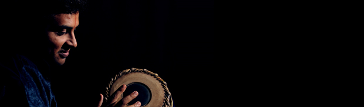

THE ARTIST
About Prithvi Krishna
Rooted in tradition yet embracing contemporary expressions.

Sri Prithvi Krishna is a distinguished Mridangam artist whose musical journey has been shaped under the guidance of illustrious gurus, each contributing profoundly to his artistic evolution. He received his foundational training from Vid. Byrappa, further refined his skills under Vid. M. S. Ramaiah and Vid. M. A. Krishnamurthy, and underwent advanced tutelage with the legendary Vid. Mannargudi A. Easwaran. This rich lineage has endowed him with a deep command over laya, refined accompaniment aesthetics, and mastery over intricate rhythmic patterns.
Prithvi Krishna's playing is characterized by crisp strokes, well-structured and imaginative korvais, and a deep musical sensitivity that elevates the concert experience. Whether accompanying vocal music, instrumental performances, dance recitals, kriti renditions, or energizing swara kalpana, he brings a fine balance of subtlety and strength, maintaining an intuitive and responsive synergy with the lead artist.
A Top Ranked Mridangam Artist of All India Radio, Bengaluru, he is a regular performer on AIR and Doordarshan and has been performing professionally for over 23 years. He has accompanied several eminent musicians including Vid. Rudrapatnam Thyagarajan, Vid. T. V. Ramaprasad, Vid. S. Shankar, Vid. D. Balakrishna, Vid. R. K. Padmanabha, and Vidushi Vijayalakshmi Subramaniam, as well as senior dancers such as Nrithya Kalanidhi Dr. Neena Prasad. He has performed at numerous prestigious sabhas and festivals in India and abroad.
In addition to his concert career, Prithvi Krishna worked as a software professional for 15 years, a path he consciously relinquished to pursue his passion for music full-time. He has also served as a Guest Lecturer in Mridangam at the Music Department, Srishti School of Design.
A passionate teacher and collaborator, he regularly conducts workshops, lecture-demonstrations, and rhythm-based explorations, engaging both seasoned connoisseurs and young learners. Deeply rooted in tradition yet receptive to innovation, Prithvi Krishna embodies the vibrant spirit of contemporary Carnatic percussion.
He is the Founder of Swami Desikan — Temple of Fine Arts, Bengaluru, an organization dedicated to the promotion of performing arts and the nurturing of artists.
LINEAGE & GRATITUDE
Gurus
“Guru is the bright mask which God wears in order to come to us.”

Vid. M. A. Krishnamurthy